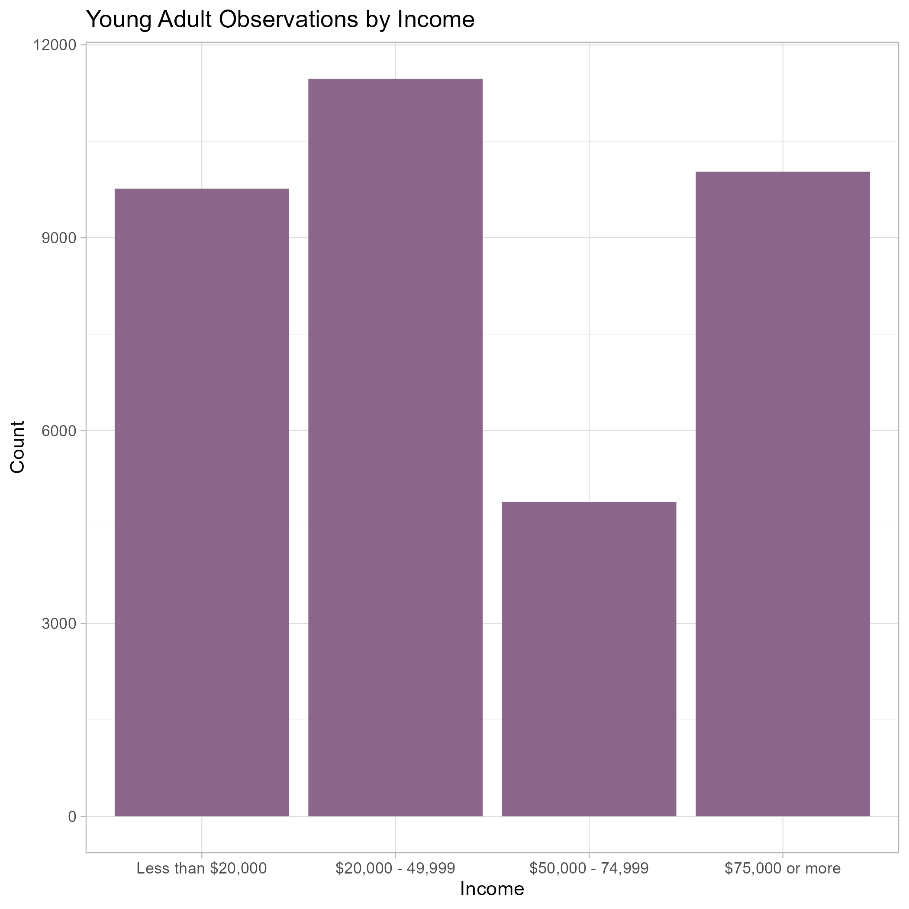
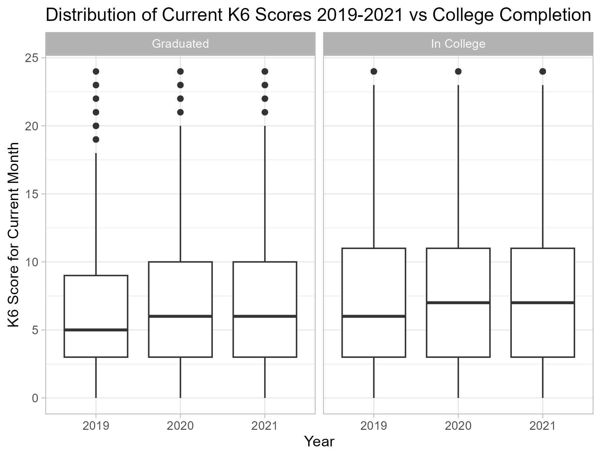
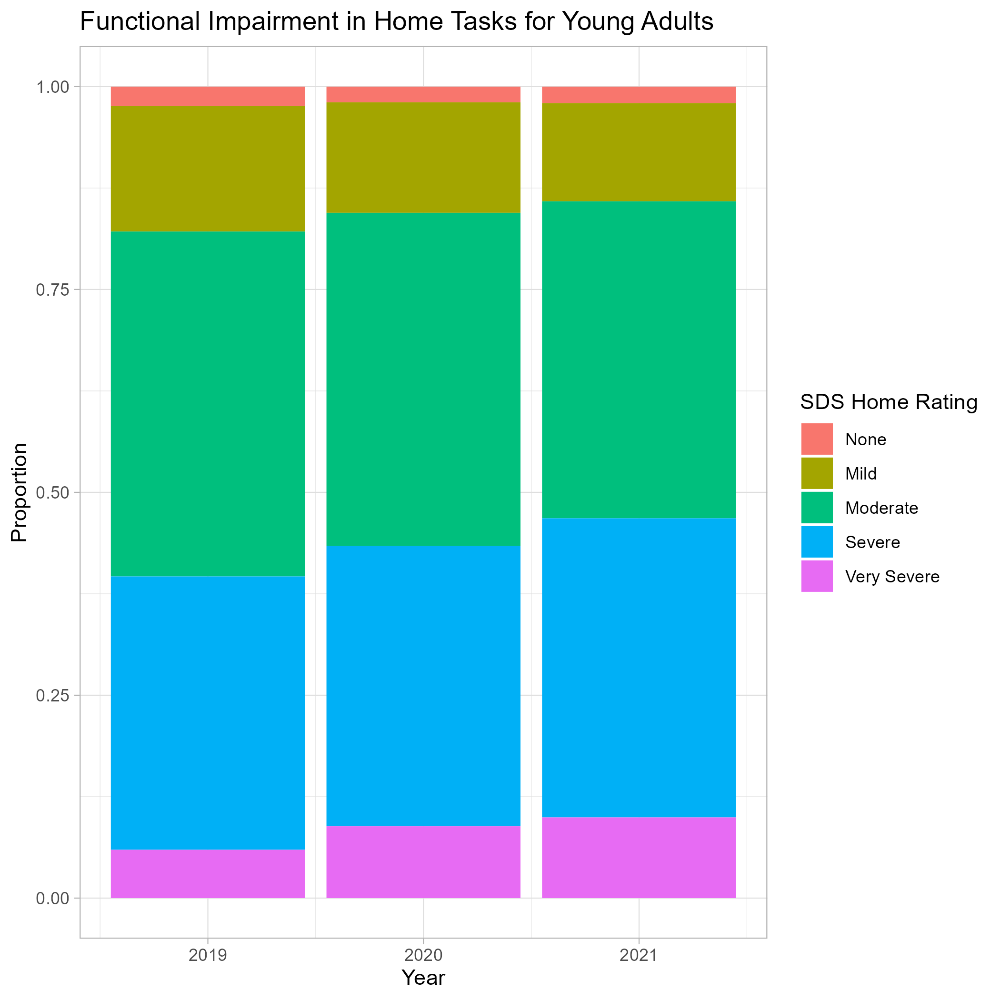
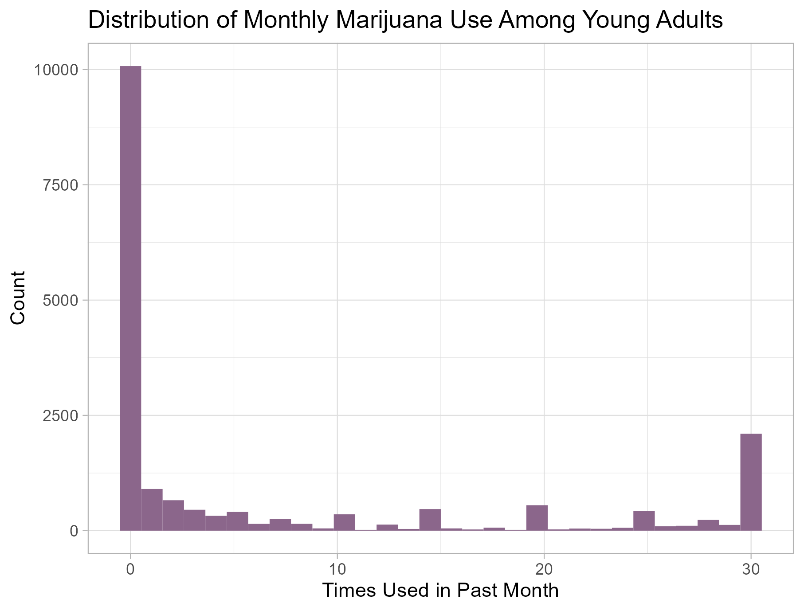
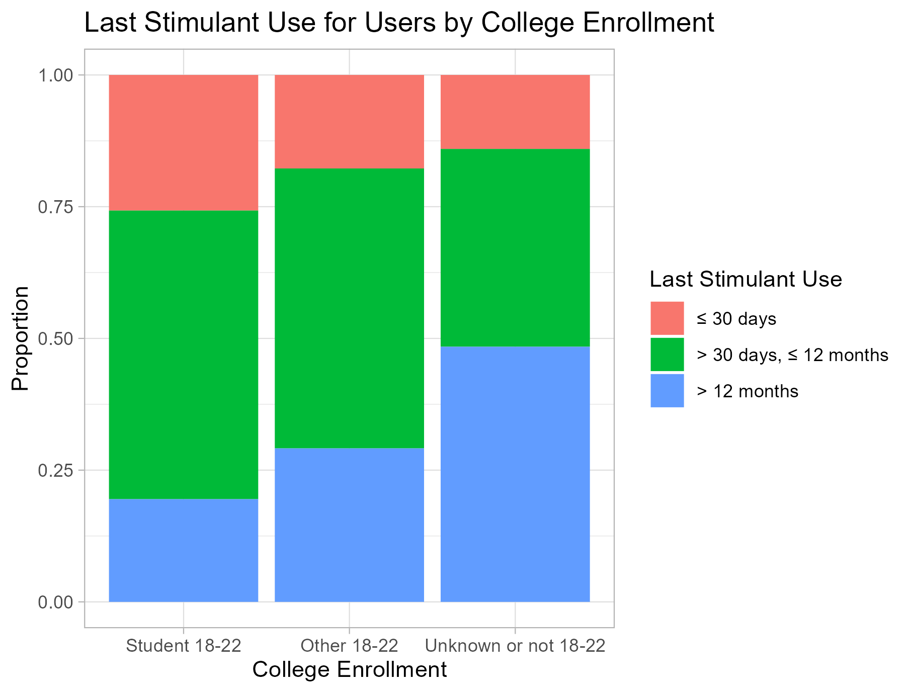

Mental Health and Drug Use in College Students during the Pandemic: An EDA of 2019-2021 NSDUH
Final Project
Data Science 1 with R (STAT 301-1)
Introduction
The goal of this exploration is to investigate the effects of the pandemic on drug use and mental health in college students. I graduated high school in 2020 during the start of the pandemic. I didn’t begin college until a year later, but my friends would start their freshman year online. Having what is usually a pivotal point in ones life be somewhat stunted had a negative affect on the mental health of many students in my graduating class. The isolation caused by quarantining could lead to poor mental and perhaps even physical health.
In the famous “Rat Park” Experiment both isolated rats and rats in communities were given one bottle filled with water and the laced with heroin or cocaine. The isolated rats drank from the laced bottle to the point of overdose while those in the “Rat Park” community typically preferred the regular water (Sederer, 2019). This raises the question of whether humans in isolation are more likely to fall into addiction. The isolation of quarantine could make people more susceptible to drug use. It’s also possible that the limitations on acquiring drugs during quarantine would make people use drugs less.
In this exploration we will use the National Survey on Drug Use and Health (NSDUH) for the years 2019-2021. This survey is conducted on people over the age of 12 residing in the US and covers topics such as drug use, mental health, and other health-related issues. To focus on college students we will be only looking at young adults 18-25. Some of the ways they assess mental health are K6, MICAT, and SDS scores. The Kessler Psychological Distress Scale (K6) is a 6-question measure that assesses someones emotional state in the past 30 days. It runs on a scale from 0-24, higher numbers indicating more psychological distress. The Sheehan Disability Scale (SDS) measures the impact of a disorder on an adults life. It categorically measures across four domains: home management, work, close relationships, and social life.SAMHSA also has their own categorical mental illness indicator (MICAT) that assess whether the person is showing symptoms of mental illness and the serverity. (CBHSQ, 2020, Appendix E).
Data overview & quality
A concise high level overview of the dataset(s) being explored. Description of the dataset(s) that covers basics: size, number of observations, number, of variables, variable types, and discussion of any quality issues (especially missingness and how it may impact the analysis). Highlight any important data collection issues or concerns. If over-technical, but important, then place technical details in Appendix: technical info.
When answering our research questions it’s important to keep in mind that there is some breakdown in comparability between the years. The 2019 interviews were all in-person while the 2021 interviews were all online. People may be more or less comfortable answering honestly when in-person vs online. The 2020 interviews began the year with in-person, stopped interviews, then continued with online interviews in the last quarter. We can see this reflected in the count of observations by year.
The observations we would have had in 2020 between in-person and online are implicitly missing. Because of this, we should avoid counts and instead use proportions in our comparison between years. Additionally, some data might be unreliable if it is affected by what time of year it is. For example, some people suffer from seasonal depression which causes a more depressed mood in the Winter months. Another example is perhaps there is an increase in stimulant use in students right before finals.
For the 2021, 2020, and 2019 datasets there were: 58034 observations of 2988 variables, 32893 observations of 2890 variables, and 56136 observations of 2741 variables respectively. After combining the years, selecting for variables of interest, and filtering only young adults (18-25), there were 36151 observations of 35 variables. All of these were numeric and most could be converted to factors using the code book. Before factorizing, the following variables had missing values:
Table 1: ?(caption)
| Variable | # Missing | % Missing |
|---|---|---|
| ASDSWRK2 | 30284 | 83.8 |
| ASDSREL2 | 30280 | 83.8 |
| ASDSSOC2 | 30278 | 83.8 |
| ASDSHOM2 | 30277 | 83.8 |
| IRVAPNICREC | 14226 | 39.4 |
| AMDEYR | 1239 | 3.4 |
| MHSUITHK | 478 | 1.3 |
| COLLENRLFT | 327 | 0.9 |
The ASDS scores (variables starting with ASDS) are mostly missing because those questions were only asked of people who reported depression symptoms. Questions about depression (AMDEYR) or suicidal thoughts (MHSUITHK) are sensitive subjects so the missing values could be due to people being uncomfortable answering and skipping the question. However, the coding of recency of vaping nicotine (IRVAPNICREC) and full-time college enrollment (COLLENRLFT) were different across years.
Table 2: ?(caption)
| Year | Variable | # Missing | % Missing |
|---|---|---|---|
| 2019 | COLLENRLFT | 94 | 0.7 |
| 2019 | IRVAPNICREC | 14226 | 100.0 |
| 2020 | COLLENRLFT | 233 | 2.9 |
| 2020 | IRVAPNICREC | 0 | 0.0 |
| 2021 | COLLENRLFT | 0 | 0.0 |
| 2021 | IRVAPNICREC | 0 | 0.0 |
In 2019 and 2020, NA values meant unknown enrollment while 3 meant the participant was not aged 18-22. In 2021, they combined these two groups into 3 so we don’t see any NA values. To fix this I converted all NA values to 3 to have continuity between the years. The vaping nicotine variable was only added in 2020. I decided to keep this because vaping I predicted vaping would be popular among young adults and be worth exploring even with just 2 years’ data.
After factorizing, the same missing values remained along with those purposefully added. For example, I wanted to keep the values for times used a drug in the past 30 days numeric, so people who had never used the drug before were coded as NA while those who just didn’t use in the past month were coded as 0.
Demographic Explorations
The main purpose of these explorations was to understand what kind of sample I’m working with. I started with univariate analysis of sex and income to see if there is any over-representation of certain groups in the data set.

The most common income group is between $20,000 and $49,000. According to the 2019, 2020, and 2021 codebooks, the $75,000 or more group is typically the largest and the less than $20,000 group is usually smaller. This is expected since as young adults grow older they tend to make more money and are able to contribute more to the family income.

We see there is slightly more females than males in our data set. This holds true across years as well (2a_sex_year) although the amount more of females differs. After the univariate analysis, I though of different ways of defining college students and what groups would be best to compare college students to.
In Figure 4, college students are defined as adults 18-22 who are full-time college students. One disadvantage of this grouping is the 18-22 year olds who are unknown and those who aren’t college aged are grouped together. It’s possible the unknowns are mostly not in college or are in college so its hard to compare. Students aged 18-22 tend to move towards the more extreme ends with less than $20,000 or $75,000 or more.
In Figure 5 college students are defined as currently in or entering college and having completed some college. This grouping can compare people in college and graduated regardless of age. One concern with the grouping in Figure 4 is that I would be indirectly comparing income groups rather than the effect of being in college. Comparing college students to graduated adults might allow us to compare people of similar socioeconomic backgrounds.
Mental Health
To explore the pandemics affect on mental health, we’ll mainly be looking at variables related to mental health from 2019-2021. If there’s an effect we expect a slight increase in signs of poor mental health in 2020 then a larger increase in 2021.

The neither group was removed to make it easier to compare graduated to in college. We see an increase in K6 score for both groups in 2020, perhaps as an effect of the pandemic. However, there is no increase in 2021 which suggests maybe the initial change had negative effects but didn’t worsen over time.
Participants were asked to complete K6 scores for the worst month of the year, if it was the same as the current month those scores were just used. In graduated adults we see a similar pattern to Figure 6 with the initial increase in 2020. However for students we see a slight increase followed by a larger increase. This could be from the isolation felt from online schooling. However, when we look only at 18-22 year old there isn’t much of a difference between years.
This is also true for K6 scores for current month as seen in (figures/3_k6mon_ft_year.png). Overall, the data doesn’t support a significant worsening of psychological distress for college students.
One hypothesis I had was that young adults would report more severe SDS scores in 2020 and 2021 because their mental disorder compounding with stress with COVID-19 could further impede their everyday life.

There is an increase in home task impairment severity as seen in Figure 8. This trend is visible in work tasks, close relationships, and social life as seen in (figures/2a_sdswork_year.png) (figures/2a_sdsrel_year.png,figures/2a_sdssoc_year.png) respectively.
Focusing on college students one trend I found was that the further along in college, the more likely someone is to show symptoms of mental illness.

This could be from the stress of college or from starting to take on independent responsibilities such as housing. It’s also possible that as people get older its more likely underlying mental illnesses will start to show symptoms.
Drug Use
I started with two univariate explorations of alcohol and marijuana monthly frequency to get a better idea of the distribution.
 The distribution is unimodal and skewed right with the majority of people drinking 0 times in the past month.
The distribution is unimodal and skewed right with the majority of people drinking 0 times in the past month.
 The distribution of marijuana use is bimodal. Unlike alcohol, theres a considerable amount of daily or near daily users.
To explore the pandemics affect on drug use I started with looking at the average monthly frequency of drug use from 2019-2021.
From Figure 10 I found that few drugs were strictly increasing or decreasing. Only marijuana in graduated is strictly increasing and only cigarettes in college students is strictly decreasing. The increase in graduated use of marijuana could also be due to more places legalizing marijuana for adults above 21. Cigarette use frequency decreasing could be a result of fear of being vulnerable to COVID. 
College aged adults not in school there was a significant in marijuana use. That combined with the increase in graduated adults as seen in Figure 10 suggests that on average the pandemic increased marijuana use frequency in young adults not in college.
I tried a different approach of looking at year in college to determine if the 2024 graduating class was any different than those before or after. I also wanted to explore how drug use changes as a student moves through college. I predicted that alcohol and marijuana use frequency would increase as students go through college since they approach the legal age.
As expected alcohol use increased as students went through college, however marijuana use was highest for first years. From Figure 11 it seems generally as students move through college marijuana and cigarette use frequency go down while alcohol frequency goes up. Cocaine use frequency generally decreased in 2020 compared to other years. This could be due to it being a more social drug and people being in isolation. The class of 2024 who were freshman in 2020 and sophomores in 2021 seem to use marijuana more frequently than other years. I hypothesized that perhaps the freshman who are already using marijuana used it more in 2020 since their course load wasn’t as rigorous as later years and online schooling gave more free time.
Table 3: ?(caption)
| Year | College Year | % Daily/Near Daily |
|---|---|---|
| 2019 | 1st year | 4.36 |
| 2019 | 2nd or 3rd year | 4.30 |
| 2020 | 1st year | 5.33 |
| 2020 | 2nd or 3rd year | 3.53 |
| 2021 | 1st year | 4.32 |
| 2021 | 2nd or 3rd year | 4.62 |
I defined daily use as 28 or more times in the past 30 days. There is a distinct increase in 2020 in percentage of 1st year daily or near daily marijuana users. There is also a decrease in 2nd and 3rd years marijuana daily marijuana use, perhaps because they will have a heavier course load.
I expected to see an increase in vaping nicotine in college students particularly due to the stress of school and it being popular among young adults.

College students are slightly more likely to have vaped nicotine before than graduated adults and those not in college. If you remove the group that hasn’t used nicotine before you can get a better idea of changes in habits of users.
All groups saw an increase in those that had vaped in the last 30 days while no group saw a decrease in people who had never vaped before. This suggests that the increase is due to people who have already vaped before starting to vape more frequently, perhaps to cope with stress from the pandemic. I expected college students to see the largest increase however graduated adults saw a significant increase although on average students are still more likely to have vaped recently.
I lastly wanted to explore the misuse of stimulants by students. I expected college students to use stimulants more than other groups and be more likely to use them to study. I predict the stress of college will make students more likely to use stimulants.

In Figure 12, we are only looking at people who have used stimulants before. So full-time college students are more likely to have used stimulants recently.
The majority (around 70%) of student users reported last using stimulants to study.
Conclusion
From my exploration I found that college students did not show any more psychological distress than those not in college.
Conclusions: college students were not unhappier from covid. There was no general decrease in mood. There was also no specific increase in drug use. one disadvantage to this approach is couldve focused on class of 2020. Use NCHA III next time. State conclusions or insights. Were you surprised by things you found or were they as expected? Why? This is a great place for future work, new research questions, and next steps. Table 3
References
Center for Behavioral Health Statistics and Quality. (2020). 2019 National Survey on Drug Use and Health Public Use File Codebook, Substance Abuse and Mental Health Services Administration, Rockville, MD https://www.datafiles.samhsa.gov/sites/default/files/field-uploads-protected/studies/NSDUH-2019/NSDUH-2019-datasets/NSDUH-2019-DS0001/NSDUH-2019-DS0001-info/NSDUH-2019-DS0001-info-codebook.pdf
Center for Behavioral Health Statistics and Quality. (2021). 2020 National Survey on Drug Use and Health Public Use File Codebook, Substance Abuse and Mental Health Services Administration, Rockville, MD https://www.datafiles.samhsa.gov/sites/default/files/field-uploads-protected/studies/NSDUH-2020/NSDUH-2020-datasets/NSDUH-2020-DS0001/NSDUH-2020-DS0001-info/NSDUH-2020-DS0001-info-codebook.pdf
Center for Behavioral Health Statistics and Quality. (2022). 2021 National Survey on Drug Use and Health Public Use File Codebook, Substance Abuse and Mental Health Services Administration, Rockville, MD https://www.datafiles.samhsa.gov/sites/default/files/field-uploads-protected/studies/NSDUH-2021/NSDUH-2021-datasets/NSDUH-2021-DS0001/NSDUH-2021-DS0001-info/NSDUH-2021-DS0001-info-codebook.pdf
SAMHSA. (2020). National Survey on Drug Use and Health (NSDUH) population data. National Survey on Drug Use and Health 2019 (NSDUH-2021-DS0001).https://www.datafiles.samhsa.gov/dataset/national-survey-drug-use-and-health-2019-nsduh-2019-ds0001
SAMHSA. (2021). National Survey on Drug Use and Health (NSDUH) population data. National Survey on Drug Use and Health 2020 (NSDUH-2021-DS0001).https://www.datafiles.samhsa.gov/dataset/national-survey-drug-use-and-health-2020-nsduh-2020-ds0001
SAMHSA. (2022). National Survey on Drug Use and Health (NSDUH) population data. National Survey on Drug Use and Health 2021 (NSDUH-2021-DS0001). https://www.datafiles.samhsa.gov/dataset/national-survey-drug-use-and-health-2021-nsduh-2021-ds0001
Sederer, L. I. (2019, June 10). What does “rat park” teach us about addiction? Psychiatric Times. https://www.psychiatrictimes.com/view/what-does-rat-park-teach-us-about-addiction
Appendix: technical info — if needed
A place to share complex and important technical steps that may highly impact explorations, but the details are too technical to share in main body of the report.
Appendix: extra explorations — if needed
Useful in cases where there are an over-abundance of explorations and they are not useful in the main body of the report or they are uninteresting, but still think readers should have access to them for reference.